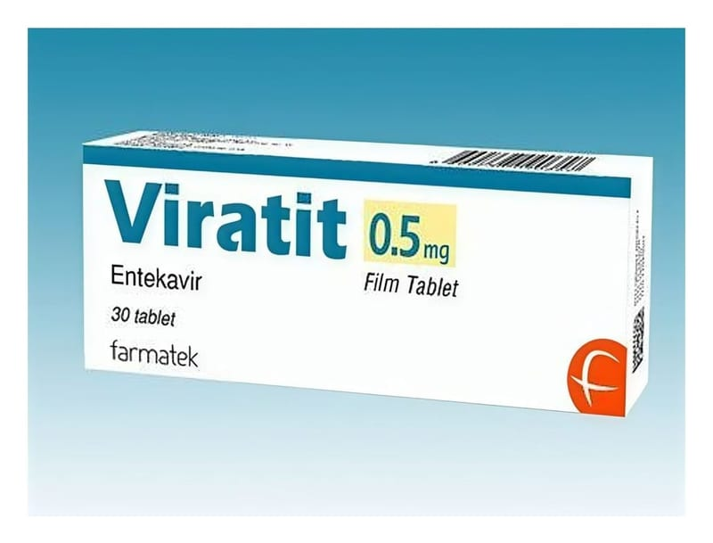

Viratit 0.5 mg Film Kaplı Tablet, 30 Adet

Ne için kullanılır
KT · Bölüm 1VİRATİT®antiviraller olarak adlandırılan bir ilaç grubuna dahildir. VİRATİT®, erişkinlerde kronik (uzun süreli) hepatit B virüsü (HBV) enfeksiyonunun tedavisinde kullanılır.
VİRATİT®karaciğeri hasar görmüş fakat halen düzgün şekilde işlev gösteren (kompanse karaciğer hastalığı) kişilerde ve karaciğeri hasar görmüş ve düzgün şekilde işlev göstermeyen (dekompanse karaciğer hastalığı) kişilerde kullanılabilir.
Bu ilacı kullanmaya başlamadan önce bu KULLANMA TALİMATINI dikkatlice okuyunuz, çünkü sizin için önemli bilgiler içermektedir.
•Bu kullanma talimatını saklayınız. Daha sonra tekrar okumaya ihtiyaç duyabilirsiniz. •Eğer ilave sorularınız olursa, lütfen doktorunuza veya eczacınıza danışınız. •Bu ilaç kişisel olarak sizin için reçete edilmiştir, başkalarına vermeyiniz. •Bu ilacın kullanımı sırasında, doktora veya hastaneye gittiğinizde doktorunuza bu ilacı kullandığınızı söyleyiniz. • Bu talimatta yazılanlara aynen uyunuz. yüksek veya düşük doz kullanmayınız. İlaçhakkında sizeönerilen dozundışında
VİRATİT®ayrıca vucüt ağırlığı en az 32,6 kg olan çocuklar ve ergenlerde kronik (uzun süreli) HBV enfeksiyonunu tedavi etmek için kullanılır. VİRATİT®, karaciğeri hasar görmüş ancak hala düzgün çalışan (kompanse karaciğer hastalığı) çocuklarda kullanılabilir.
VİRATİT®0,5 mg film tabletlerin her biri etkin madde olarak 0,5 mg entekavire eşdeğer 0,5325 mg entekavir monohidrat içerir. VİRATİT®0,5 mg film tablet, beyaz renkli üçgen bikonveks film kaplı tabletler halindedir. Her kutuda 30 tablet vardır.
VİRATİT®, erişkinlerde hepatit B virüsü (HBV) enfeksiyonunun tedavisinde kullanılır.
Hepatit B virüsünün neden olduğu enfeksiyon, karaciğerinize zarar verebilir. VİRATİT®vücudunuzdaki virüs miktarını azaltır ve karaciğerinizin durumunu iyileştirir.